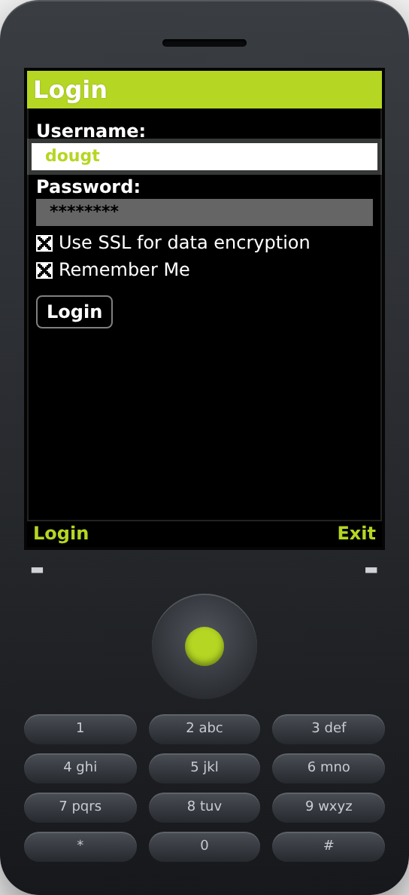
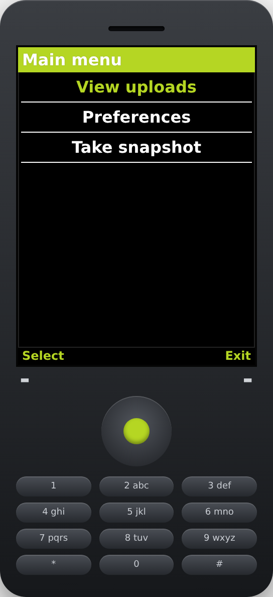
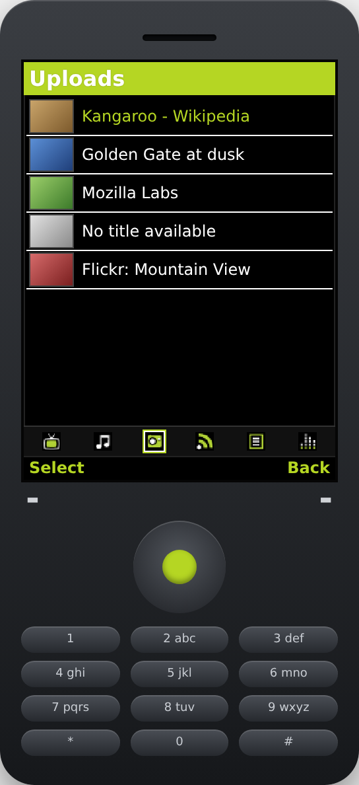
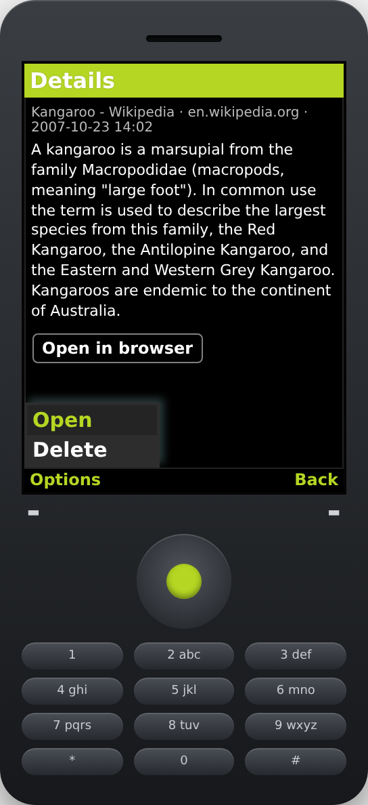
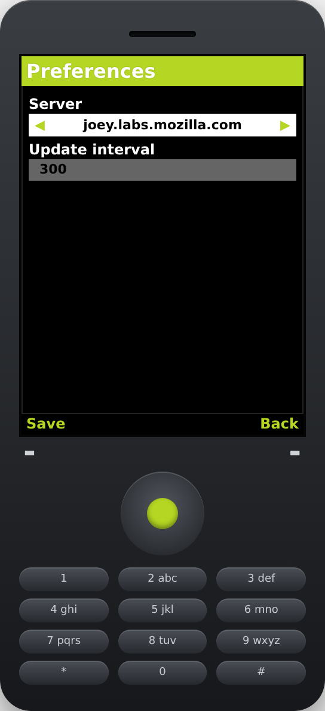
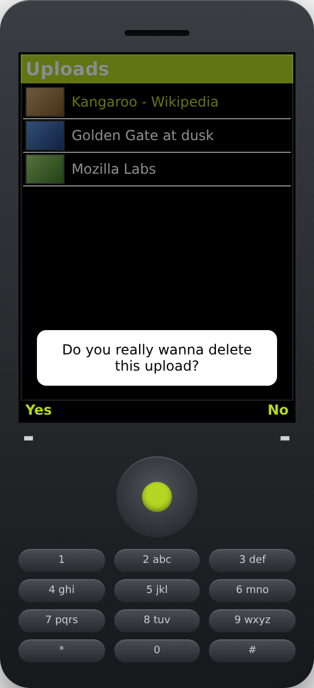
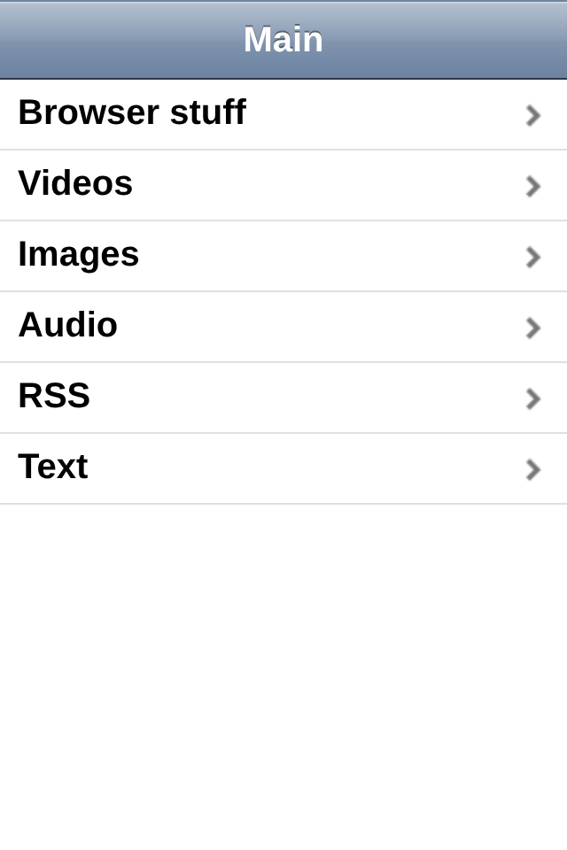

The receiving end
Phone clients
Joey's whole point was that the content you clipped in Firefox showed up on a phone. In 2007 there was no single way to do that, so the project shipped three: a Java ME application for feature phones and smartphones, an iPhone-specific web view, and a bare XHTML Mobile Profile page for every other handset browser.
Why three phone paths
The phone market Joey was built for had not yet collapsed into two platforms. The dominant programmable runtime on handsets was Java ME (MIDP 2.0 on CLDC 1.1), fragmented across hundreds of devices with different screen sizes, key layouts, media codecs and vendor bugs. The iPhone had shipped on June 29, 2007, mid-way through Joey's life, with a desktop-class Safari but no native SDK; Apple's official line until the SDK arrived in 2008 was that web apps were the development model. Everything else, from Motorola RAZRs to Windows Mobile devices, had a WAP 2.0 browser that could render XHTML Mobile Profile and little more.
The server therefore sniffs the User-Agent and picks a layout per request. The regular expressions are short and tell you exactly which world the authors were living in:
function isIPhone () {
...
$res = preg_match('/iPhone/i', $agent);
...
function isMobile () {
...
$res = preg_match('/iemobile|windows ce|nokia|symbian|motorola|mot\-|samsung|sec\-|lg\-|sonyericsson|sie\-|up\.b|up\//i', $agent);Source: server/app/vendors/BrowserAgent.class.php
Which phones were targeted
The MIDlet is built one device at a time with J2ME Polish, and each developer kept a personal properties file listing the handsets they were building for. Between the two files and the Ant build you can read off the test fleet:
| Device identifier | Where listed | Note |
|---|---|---|
| HTC/TyTN | dougt.properties (active), mkoch.properties | Doug Turner's active build target: a Windows Mobile slider with a Java ME runtime |
| Generic/wtk | mkoch.properties (active) | Michael Koch's default: the Sun Wireless Toolkit emulator |
| Nokia/N95, Nokia/6630, Nokia/E50 | both | Symbian S60 phones; the README example is -Ddevice=Nokia/E50 |
| Motorola/Q, Motorola/Motorazr_V3x | dougt.properties | commented out |
| Sony-Ericsson/K750, Sony-Ericsson/W800 | mkoch.properties | commented out |
| BlackBerry/8100, 8700, 8800 | mkoch.properties | commented out; BlackBerry 4.0, 4.1 and 4.2 API jars are bundled in polish/import, and the obfuscator is skipped for BlackBerry builds |
| Generic/Midp2Cldc11, Generic/JtwiCldc11 | both | lowest-common-denominator builds |
When no device is given, build.xml falls back to a device-database query: every phone that "supportsPolishGui", runs MIDP 2.0 or newer, is not a BlackBerry, and is not the .NET CF or Nokia Series 90 pseudo-devices. Two locales were wired in, en_US and de_DE, with the German strings maintained by Michael Koch at Enough Software, the company behind J2ME Polish. Note the loaded JAR name in the UI: ${polish.vendor}-${polish.name}-${polish.locale}-joey.jar, which is why the server's phones table carries a jar_name per handset.
Source: clients/j2me/dougt.properties, clients/j2me/mkoch.properties, clients/j2me/build.xml, clients/j2me/README
The Java ME MIDlet

LoginView.java, the messages.txt strings and the polish.css theme, not an emulator capture.
MainMenuView.java; the third entry only exists on phones with the Mobile Media API.
FramedForm with the type-filter icon bar docked at the bottom. Mock-up, not a capture.
DetailsView.java.
PreferencesView.java.
alertConfirmation style.What J2ME Polish gave the project
Writing a MIDlet that looked acceptable on more than one phone was the hard part of Java ME development, and Joey outsourced it. J2ME Polish is an Ant-driven build system and UI toolkit from Enough Software. It contributes four things you can see in this tree:
- A CSS-styled replacement for LCDUI.
resources/polish.cssdefines colours (joeyGreen: #B5D623on a black background), screen styles (.loginScreen,.uploadScreen), item styles (.uploadItem,.mainmenuentry), alerts and the menu bar. Styles are attached in Java with preprocessor comments such as//#style uploadItem. - A device database. The
-Ddevice=Vendor/Modelswitch pulls screen size, supported APIs and known bugs for that handset, and the preprocessor gates code on capabilities: the camera screen and the "Take snapshot" menu entry are wrapped in//#if polish.api.mmapi, and the SSL URL rewrite is skipped for Samsung with//#if polish.vendor != Samsung. - Per-device packaging. One source tree yields one JAR and JAD per device and locale, obfuscated with ProGuard except in test and BlackBerry builds, and a
buildlistfinalizer writes out the list that the server later imports. - Library code.
ThreadedCommandListener,RmsStorage,RedirectHttpConnection,FramedForm,IconItem,SnapshotScreen, and theHtmlBrowserandRssBrowserwidgets used on the details screen all come fromenough-j2mepolish-client.jar.
The tree also vendors the org.bouncycastle.util.encoders package, because Java ME has no Base64 decoder of its own, and the polish/legal folder carries the licences for J2ME Polish, ProGuard's predecessors RetroGuard and yGuard, JDOM, ASM, RetroWeaver and SVG Salamander. The Polish copy was committed wholesale and updated twice, once in September and once in November 2007.
Source: clients/j2me/resources/polish.css, clients/j2me/build.xml, clients/j2me/polish/, clients/j2me/source/src/org/bouncycastle/
The controller: one thread, one blocking event loop
The MIDlet entry point is three lines: JoeyMIDlet.startApp() creates a JoeyController and starts it. JoeyController extends Thread and implements CommandListener, ItemCommandListener and ResponseHandler, so every soft key press and every network reply lands in the same object. UI callbacks arrive on a ThreadedCommandListener so they never block the LCDUI event thread; they are reduced to small integers and handed to the controller thread with notifyEvent(), which stores the value and calls notify(). The controller's own run() method is a straight-line script that calls waitEvent() wherever a 2007 developer would otherwise have written a callback:
private int waitEvent()
{
int event = EVENT_NONE;
do {
synchronized (this) {
try {
// Wait for notification for next event.
wait();
event = this.nextEvent;
this.nextEvent = EVENT_NONE;
}
catch (InterruptedException e) {
// Ignore this.
}
}
} while (event == EVENT_NONE);
return event;
}Screens are identified by integer constants (VIEW_LOGIN through VIEW_RSS_ITEM, ids 1 to 7) and alerts by more of the same (ALERT_UPLOADS_DELETE_CONFIRMATION through ALERT_SECURITY_ERROR, ids 8 to 17). A single getView(int) switch builds each one on demand, wires commands to it, and returns it. Events are also integers: EVENT_YES, EVENT_BACK, EVENT_DELETE and so on, plus EVENT_NETWORK_REQUEST_SUCCESSFUL (101) and EVENT_NETWORK_REQUEST_FAILED (100) from the network side. The life of a session reads top to bottom in run():
- Login loop. Show
LoginView; on Login, copy the fields intoUserData, show the indeterminateALERT_WAITgauge, and queue a login request. A failure maps theCommunicationControllererror code to one of three alerts: network, security (the handset refused the connection, typically a permission prompt the user declined), or bad credentials. - Version check. The login response carries an
X-joey-versionheader. If it compares greater than the build's ownVERSION, the "new version available" alert offers to open the update URL withplatformRequest()and exit. The URL is injected at build time fromjoey.update.url, which points at the JAD under/app/webroot/ff/on the server. - Persist and resync. If "Remember Me" is ticked the credentials are saved to the RMS record store
joey_userdata. Cached uploads are loaded fromjoey_uploads, and an incremental index request is sent with the last-sync timestamp. - Start the poller. A
java.util.TimerfiresupdateTaskeveryupdateIntervalseconds (default 300). Each tick asks the server for anything modified since now minus one interval. - Main menu loop. Dispatch on the selected row to
doUploads(),doPreferences()ordoSnapshot(), until the user confirms Exit. On the way out the uploads vector is written back to RMS.
The poller never touches the UI directly. When a background index update arrives, notifyResponse() raises EVENT_UPDATE_AVAILABLE, and waitEventAndProcessUpdates(), used by every screen in the main loop, saves the current Displayable, shows the "Updates are available. Apply updates?" confirmation, merges the pending hashtable if the answer is yes, and restores the previous screen. That is the alert shown in the mock-up above.
Source: clients/j2me/source/src/org/mozilla/joey/j2me/JoeyController.java, JoeyMIDlet.java, UserData.java
The screens
| View | Base class | What it does |
|---|---|---|
LoginView | LCDUI Form | Username and password text fields (50 chars, predictive text off), a multiple-choice group with "Use SSL for data encryption" and "Remember Me", and a Login item. Pre-fills from stored UserData. |
MainMenuView | Polish List | "View uploads", "Preferences", and on MMAPI phones "Take snapshot". Index order is hard-wired into the controller's switch. |
UploadsView | Polish FramedForm | A ChoiceGroup of six icons appended to the BOTTOM frame: video, music, pictures, RSS, text, microsummaries. Left and right keys move between icons and rebuild the list; up and down move within it. Each row is an IconItem with the server-supplied preview thumbnail, falling back to a StringItem title, and carries its Upload object as an item attribute. |
DetailsView | LCDUI Form | Dispatches on MIME type. RSS feeds are rendered with Polish's RssBrowser, and selecting an entry raises EVENT_RSS_ITEM. Plain text and microsummaries become a StringItem. Images decode into an ImageItem. audio/amr and video/3gpp are played in-process with the MMAPI Manager and a VideoControl centred on the form. widget/joey payloads are loaded into Polish's HtmlBrowser. Anything else prints "Mime type not supported yet". |
RssItemView | LCDUI Form | Shows one feed entry's description text. |
PreferencesView | LCDUI Form | An exclusive choice of three servers (joey.labs.mozilla.com, dougt.joey-dev.labs.mozilla.com, clouserw.joey-dev.labs.mozilla.com) and a numeric update-interval field. The controller only reads the interval back; the server choice is displayed but never applied. |
SnapshotScreen | Polish, MMAPI only | Live camera viewfinder. The Snapshot command grabs a frame in the first encoding the device reports, wraps it as an Upload titled "Camera snapshot" with type image/jpeg, and posts it to the server. |
The snapshot is the one place the phone sends content back up the pipe. The code is honest about how finished it is:
// TODO: Choose the best encoding instead of using the first.
String[] encodings = SnapshotScreen.getSnapshotEncodings();
byte[] image = this.snapshotScreen.getSnapshot(encodings[0]);
// TODO: Is this the correct format for time? Is this correct for all locales?
long modified = new Date().getTime();
// TODO: Send this to the server, then do an an update.
Upload upload = new Upload(-1, "image/jpeg", "Camera snapshot", image, image, modified, "");
this.uploads.addElement(upload);
this.commController.add(upload, this);Source: clients/j2me/source/src/org/mozilla/joey/j2me/views/*.java, JoeyController.java (doSnapshot)
Persistence
Two RMS record stores hold state between launches. joey_userdata is a UserData object serialised with Polish's Externalizable; its format is versioned (currently 4) and the reader tolerates older records, which tells you the format changed three times during the project. It is only written when "Remember Me" is on. joey_uploads is the whole uploads vector, including thumbnails, so the list appears immediately on launch and the first network round trip is an incremental sync rather than a full download. Deleted items are kept in the vector with a flag and filtered at display time; a comment in UploadsView notes this "should be removed since we should clear these out of RMS".
Opening media
When a details screen for audio or video has no data bytes, it shows an "Open in browser" item bound to CMD_MEDIA_OPEN. The controller then asks CommunicationController.getRawMediaURLFor(id) for a URL and hands it to MIDlet.platformRequest(), so the phone's own browser or media player takes over. Any exception produces the one joke in the string bundle: "The media could not be opened on your handset. We blame Justin. Don't you?" (the German translation drops the blame). In practice the exception path is the likely one, for a reason covered in the protocol section below.
Source: clients/j2me/resources/messages.txt, messages_de.txt, JoeyController.java (doUploadDetails)
The wire protocol, from the phone's side
Everything goes over HTTP POST to the CakePHP server, through a single worker thread. CommunicationController extends Thread, owns an ArrayList queue, and blocks in getNextRequest() until something is added. addRequest() appends; addNextRequest() inserts at the front, which is how a re-login jumps the queue. Each request is a small subclass of NetworkRequest that fills in three fields in its constructor, requestURL, contenttype and postdata, and optionally overrides onStop() to parse the response before notifying its ResponseHandler.
| Class | URL | Body | Parses |
|---|---|---|---|
LoginNetworkRequest | /users/login | rest=1&data[User][username]=…&data[User][password]=… | nothing; the session cookie and X-joey-version header are captured by the controller |
IndexNetworkRequest | /uploads/index | rest=1&limit=N&start=M | key=value lines; reads count and total_count, then merges |
IndexUpdateNetworkRequest | /uploads/index | rest=1&since=<unix seconds> | same parser, same merge |
GetNetworkRequest | /files/view/<file id> | rest=1 | raw bytes into Upload.data |
AddNetworkRequest | /uploads/add | hand-built multipart/form-data with boundary 111222111: rest, title, referrer, and the file part | nothing |
DeleteNetworkRequest | /uploads/deleteByFileID/<id> | rest=1 | nothing |
GetRawURLNetworkRequest | /uploads/raw/<id> | rest=1 | response body as a URL string |
The rest=1 field is the whole content negotiation. On the server, AppController sets $nbClient ("non-browser client") when it sees it, and controllers then skip HTML and answer with an X-joey-status header instead. The phone reads that header with getHeaderFieldInt("X-joey-status", -1) and treats it as the response code; the HTTP status is ignored. Session handling is manual: the first Set-Cookie is clipped at the semicolon and replayed as Cookie on every later request. If any response comes back with status 511 (no active session) the request is pushed back to the head of the queue, a silent login is queued in front of it, and the original request runs again.
The index response is a line-oriented text format produced by j2me_index.thtml, chosen because parsing it needs nothing more than indexOf('='). A two-item reply looks like this, with the base64 preview shortened:
total_count=14
count=2
id.1=312
title.1=BBC News | Technology
referrer.1=http://news.bbc.co.uk/rss/technology.xml
modified.1=1192810345
type.1=rss-source/text
preview.1=iVBORw0KGgoAAAANSUhEUgAAADIAAAAo…
id.2=309
deleted.2=1Items the server has not finished processing (ever_updated = 0) appear as a bare id.N line with no fields, and deleted items carry only deleted.N=1. processIndexUpdates() walks 1..count, removes deleted ids from the local vector, multiplies modified by 1000 because the server sends seconds, decodes the preview with the vendored BouncyCastle Base64.decode(), and inserts or replaces the Upload. The full index is paged: after each page the controller compares the local count against total_count and, if short, requests the next five starting at the current size.
Two things are worth knowing before you trust this code path. First, GetRawURLNetworkRequest's onStop() calls this.notify() and the caller calls nr.wait() without holding the monitor, so the "Open in browser" feature would throw IllegalMonitorStateException before it ever reached platformRequest(). Second, there is no raw action in uploads_controller.php at all, so even a correct call would get a CakePHP error page. The blame-Justin alert was the realistic outcome.
Errors that are not status codes are mapped in process(): SecurityException becomes ERROR_SECURITY, IOException becomes ERROR_NETWORK, and any other Throwable is reported as ERROR_LOGIN_DATA with a fake 404. The login loop turns those into the three alerts listed earlier.
Source: clients/j2me/source/src/org/mozilla/joey/j2me/CommunicationController.java, *NetworkRequest.java, server/app/views/uploads/j2me_index.thtml, server/app/app_controller.php
The iPhone path

iphone_index.thtml markup and the bundled iUI stylesheet, not a capture from a 2007 device.The iPhone support was added in a hurry and it shows, in a good way: it is the smallest amount of code that could work. UsersController::login() and UploadsController::index() check BrowserAgent::isIPhone() and swap to the iphone layout and an iphone_* view. The layout is a dozen lines: a viewport meta tag pinning the width to 320 pixels with scaling disabled, an @import of iui.css, and the content. iUI is Joe Hewitt's 2007 JavaScript and CSS kit that made a list of <ul> elements behave like the iPhone's own sliding navigation; the copy under webroot/vendor/iui/ has no version header, and the ._* resource-fork files beside it say it was unzipped on a Mac.
The home list has six rows: Browser stuff, Videos, Images, Audio, RSS and Text. The controller builds one query per category by passing a type filter to findAllUploadsForUserId(), so the page arrives with every list pre-rendered and iUI simply shows and hides them. Rows link to /files/wrapper/<id>, which returns a full-window <iframe> around the file, except RSS rows which go straight to /files/view/. Audio rows link to in-page panels instead, and those panels are a debugging aid left in production:
if (!strcmp($item['File']['type'], "audio/amr"))
{
echo "<h2>This is an audio file. Not sure what to do with it</h2>";
}
else if (!strcmp($item['File']['type'], "video/3gpp"))
{
echo "<h2>This is an video file. Not sure what to do with it</h2>";
}
...
echo "<br>Debug view of item:";
echo "<pre>";
print_r($item);That uncertainty was well founded. The server's transcoder turned every audio upload into AMR and every video into 3GPP H.263, the formats feature phones could play, and the original iPhone could play neither. It also had no Flash, so the desktop site's FLV and MP3 players were out. What did work on the iPhone was exactly what needed no plugin: images (served as PNG), clipped text, the "Current Tabs" HTML pages, rendered RSS, and microsummaries. There is also a vestigial Settings panel with Repeat and Shuffle toggles copied from the iUI sample app and wired to nothing.
Source: server/app/views/layouts/iphone.thtml, server/app/views/uploads/iphone_index.thtml, server/app/views/users/iphone_login.thtml, server/app/controllers/uploads_controller.php, server/app/webroot/vendor/iui/
The WAP path

mp_index.thtml and mp_joey.css.For any User-Agent that matches the isMobile() list but is not an iPhone, the same controllers switch to the mp layout and mp_* views ("mp" for mobile profile). The layout declares the XHTML Mobile Profile 1.0 doctype and, with a header() call placed after the doctype has already been emitted, sets the content type to application/vnd.wap.xhtml+xml. The stylesheet is 40 lines: alternating white and #CCCCCC rows, a green bold "[View]" link and a red small "[Delete]" link.
The page is deliberately dumb. The index controller forces style = 'html' and ajaxAutoDetect = false on the pagination helper with the comment "mobile browsers might support ajax stuff, but we should use the simpliest pagination", so paging is a "Go to page: 1 | 2 | 3" line. Each row is the title, a View link to /files/view/ and a Delete link to /uploads/delete/, which on this path answers with a flash message and a redirect instead of the AJAX fragment the desktop site uses. JPEG and GIF uploads are shown inline as their preview image. The preview size is derived from the user's registered handset: the controller looks up screen_width and screen_height in the phones table and halves them, defaulting to 100 by 100 when the phone is "Not Sure". The login form labels are "You:" and "Pass:", and there is a minimal upload form so a phone with a file picker could push a photo up with the title defaulting to "Phone Upload" and the referrer fixed at uploaded_from_my_phone.
Source: server/app/views/layouts/mp.thtml, server/app/views/uploads/mp_index.thtml, mp_add.thtml, server/app/views/users/mp_login.thtml, server/app/views/elements/mp_*.thtml, server/app/webroot/css/mp_joey.css
Getting the software onto the phone
Installing a MIDlet in 2007 meant getting a JAD or JAR URL into the phone's browser, and the server had a page for exactly that. UsersController::getSoftware() renders links to the Firefox XPI and to the JAR for the handset chosen at registration, and offers a button that texts the link to the phone. The SMS is not sent through a carrier API; it is an e-mail to the carrier's SMS gateway, assembled from the user's phone number and the emaildomain column of the operators table, which seeds 42 carriers from AT&T (txt.att.net) and Verizon (vtext.com) to Vodacom and Movistar. The component's own comment calls it "very US centric".
Both download links are rewritten from https:// to http:// before being shown. The code gives no reason, but the context does: Java ME phones of that era frequently lacked the root certificates to validate a server certificate, and a JAD fetched over a failing TLS connection simply would not install. The same consideration explains why the MIDlet defaults to plain HTTP and leaves SSL as an opt-in checkbox on the login form.
The per-phone JAR name comes from the J2ME Polish build. The buildlist finalizer writes a tab-separated file of every device built, and server/tools/import_buildlist.pl diffs a new build list against the previous one and emits INSERT INTO phones statements for the additions, with the name, locale, JAR and JAD file names, user-agent string and screen size. It refuses to proceed if a device disappeared, printing "ERROR. YOU CANNOT REMOVE DEVICES FROM BUILD LIST!!!", because users' accounts reference phone rows by id. The server also reads build.properties from the same build to learn the current MIDlet version, which is what it echoes back in the X-joey-version header.
Source: server/app/controllers/users_controller.php, server/app/controllers/components/sms.php, server/app/controllers/components/joey.php, server/app/config/sql/joey.sql, server/tools/import_buildlist.pl, server/app/views/users/get_software.thtml
Reading the code today
- The MIDlet lifecycle is unimplemented.
pauseApp()anddestroyApp()both contain only// TODO: Implement this method.An incoming call or a Back-to-home key would leave the poller timer and the network thread running until the VM killed them, and nothing would be flushed to RMS. - Build paths are personal.
build.xmlhard-codes<property name="wtk.home" value="/home/mkoch/local/WTK2.2" />andnokia.homeunder the same home directory, with the per-user properties files as the override mechanism. The README's own instructions pass-Dwtk.homeon the command line. - Two dead-end features are still wired to menus. "Open in browser" calls a server action that does not exist and uses
wait()/notify()without synchronisation, and the Preferences server list is read by nobody:doPreferences()saves only the update interval. A comment inUploadsView("dougt -- not sure if we should have preferences and the camera here or in the MainMenu view") records the discussion that moved them. - The multipart body is subtly malformed.
AddNetworkRequestomits the\r\nafter the referrer value before the next boundary, and converts the binary image throughnew String(upload.getData())and back, which is not byte-preserving on most Java ME platform encodings. Camera snapshots may well have arrived corrupted; there is no evidence in the tree either way.
What the MIDlet got right is also visible. Incremental sync with a cached local store, a queue-and-replay model that survives session expiry, previews pushed as base64 so the phone never makes a second request per item, and a fully localised UI built from one source tree for dozens of handsets: that was a serious mobile client for 2007, built in roughly three months by two people.